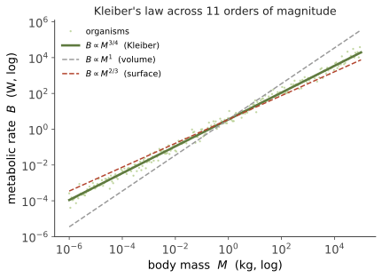

人体 II · 代谢、能量与标度律
证据地位：标度关系本身【实】（数据跨二十个数量级）；其理论解释【争】（3/4 指数的由来至今未有公认定论）。 本页是全课定量的第一个高峰，也是生物学少有的、能跨越二十个数量级仍成立的经验律。它回答一串看似无关的问题：为什么大象心跳慢？为什么小动物必须不停进食？为什么没有老鼠大小的恒温动物能在极地生存？——答案都在同一条幂律里。
一、人体的能量账
先把尺度感建立起来。一个成年人的基础代谢率（BMR）约 70–80 W——相当于一只白炽灯泡。日常总能耗约 2000–2500 kcal/天（约 100 W 平均功率）。这些能量的去向大致是：
| 器官 | 占体重 | 占静息代谢 |
|---|---|---|
| 脑 | ~2% | ~20% |
| 肝 | ~2.5% | ~20% |
| 心 | ~0.5% | ~9% |
| 肾 | ~0.4% | ~8% |
| 骨骼肌（静息） | ~40% | ~20% |
脑以 2% 的体重消耗 20% 的能量——这是人类演化中一笔昂贵的投资，也是线四讨论人类演化时的关键约束：要供养这么贵的器官，必须有高质量食物（熟食、肉类）与相应的社会结构。
二、Kleiber 定律：3/4 次幂
若把代谢率 \(B\) 对体重 \(M\) 作图，跨越从细菌到蓝鲸的二十多个数量级，数据落在一条直线上（双对数坐标）：

这个指数是反直觉的。两个朴素预期都不对：
- 若代谢正比于细胞数（即体积、质量），指数应为 1；
- 若受散热限制（散热正比于表面积，而表面积 \(\propto M^{2/3}\)），指数应为 2/3。
实测却稳定在 0.75 附近（不同数据集在 0.66–0.80 间有争论，但 3/4 是最广为引用的中心值）。
推论一：单位质量代谢率随体型下降。 \(B/M \propto M^{-1/4}\)。所以小鼠每克组织的耗能远高于大象，必须持续进食；而大型动物可以耐饥数周。这也解释了体型的下限——恒温小动物的单位耗能高到难以维持（鼩鼱、蜂鸟活在这个边缘上，必须近乎不停地吃）。
推论二：生理时间也标度。 心率 \(\propto M^{-1/4}\)，寿命 \(\propto M^{1/4}\)。两者相乘——一生的总心跳数大致是个常数（哺乳动物约 10⁹ 量级）。老鼠心跳 600/分、活 2 年；大象 30/分、活 60 年。大动物不是活得更久，是活得更慢。（人类是显著的例外，寿命远长于体型预测值——线四会讨论。）
三、为什么是 3/4：三种解释【争】
这是本页需要诚实标注的地方：3/4 的成因至今没有公认答案。主要候选：
① 分形输运网络（West–Brown–Enquist，WBE 模型）：假设生物体靠分级分支的输运网络（血管、气管、木质部）供应营养，网络要满足空间填充、末端单元（毛细血管）尺寸不随体型变化、且能耗最小化。由这些假设可导出 3/4。这是最有影响的理论，但受到相当多批评——假设的普适性、数学推导的严格性、以及对实测数据的拟合都被质疑过。
② 表面积–体积的修正：认为真实指数介于 2/3 与 1 之间，3/4 只是一个混合效应，并非基本常数。持此论者强调不同类群的指数确实不同（鸟类、哺乳类、变温动物各异）。
③ 多重约束的统计结果：代谢受多因素共同限制（散热、供氧、细胞代谢能力、活动方式），3/4 是这些约束叠加的经验平均，不必有单一优雅来源。
恰当的态度：规律是真的，解释是开放的。 这是一个很好的科学案例——一条稳固的经验律可以在理论未定的情况下长期被使用，而争论本身推动了定量生物学的发展。
四、其他标度关系
标度思想不止于代谢：
- 骨骼：支撑力正比于骨横截面积（\(\propto L^2\)），而体重正比于体积（\(\propto L^3\)）。所以体型越大，骨骼必须不成比例地粗（异速生长）。这给陆生动物的体型设定了上限——这也是为什么大型恐龙与鲸的体型策略（陆地 vs 水中浮力支撑）差别巨大。
- 扩散的极限：扩散时间 \(t \sim L^2/D\)。氧靠扩散只能有效供应约 1 mm 的距离，超过就必须有循环系统。这条物理约束直接决定了多细胞生物必须演化出输运系统（下一页的主题）。
- Berg–Purcell 极限：细胞感知外界浓度的精度受限于分子随机到达受体的涨落，给出信号检测的物理下限——细菌趋化的性能已接近这个极限，是生物物理最漂亮的结果之一。
五、人类的能量策略
把上面的框架用回人类：
- 相对代谢率：人的 BMR 大致落在哺乳动物预测线上，但能量分配特殊——脑占比极高，肌肉相对较弱。我们把能量投给了神经系统。
- 熟食假说（Wrangham）【争】：烹饪提高食物的能量可得率与消化效率，可能使供养大脑成为可能。证据包括熟食的消化能耗更低、人类消化道相对缩短；但关键的用火年代证据仍有争议。
- 耐力奔跑假说【争】：人类的出汗散热（而非喘息）、跟腱、臀大肌等特征，可能是长距离追猎的适应。这解释了为什么人在长距离上能跑赢多数哺乳动物，尽管短跑很慢。
这两个假说都标【争】——它们合理、有证据，但都属于演化叙事，难以严格检验（线四第五页会正面讨论"适应性故事"的方法论风险）。
下一页：人体 III——循环与呼吸。既然扩散只能管 1 毫米，身体如何把氧气送到几十万亿个细胞？这是一个输运工程问题，可以用物理算清楚。